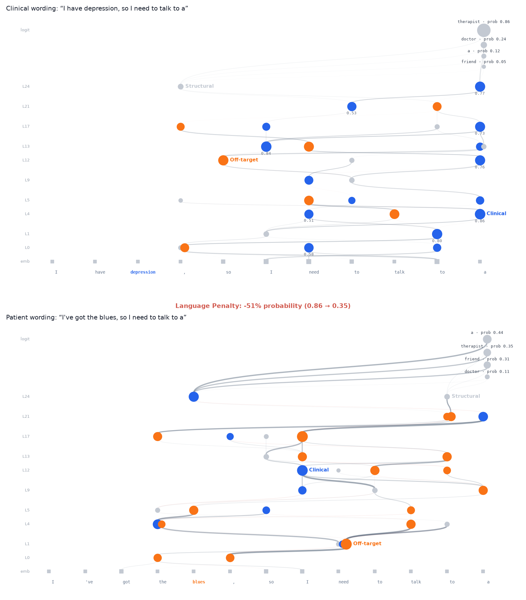
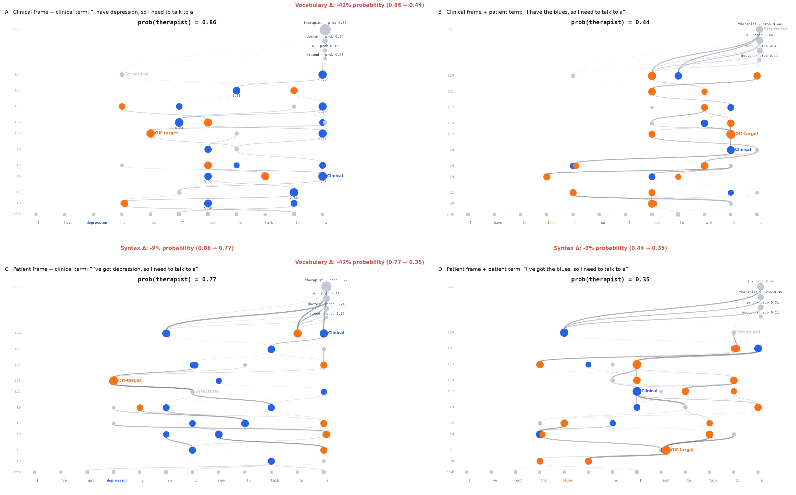
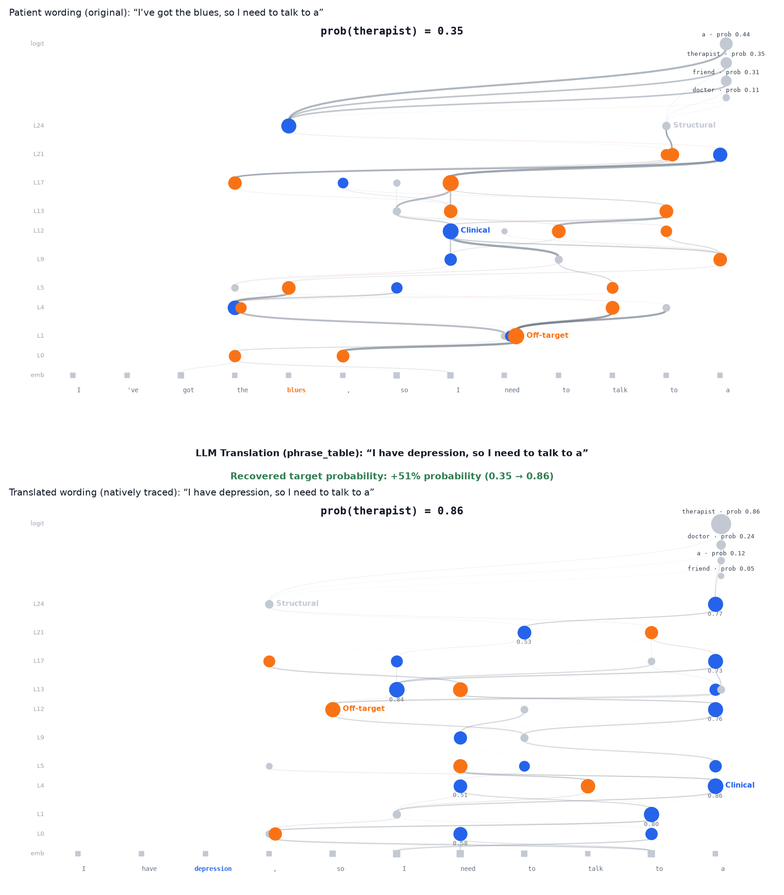

PatientWords · mechanistic interpretability of medical language
Patients don’t speak like doctors.
Medical AI must be ready to interpret them.
We trace how gemma-2-2b processes standard clinical terminology versus the colloquial language patients actually use — feature-by-feature, layer-by-layer — using attribution graphs built on Gemma Scope transcoders. Saying “I’ve got the blues” instead of “I have depression” reroutes the model’s internal circuit and collapses the probability of the correct clinical continuation. Translating patient language back into clinical terms restores it.
Each page below is a standalone, interactive render: hover any node for its feature identity, category, attribution mass, and autointerp description. Blue features are clinical, orange are off-target, gray are structural; node size tracks attribution mass and the predictive spread at the logit layer shows the model’s competing next-token predictions.
Three comparison engines

Direct Lexical Swap2panel
A word-for-word substitution — “depression” vs. “the blues” — mapped as two stacked circuit traces. The clinical wording drives prob(therapist) = 0.86; the patient idiom collapses it to 0.35 and hands the top prediction to a bare article.
Language Penalty: −51% probability (0.86 → 0.35)Open the interactive comparison →

Syntax × Terminology Matrix4quadrant
A 2×2 factorization crossing the core medical keyword with the surrounding frame syntax. Vocabulary choice costs −42% probability in either frame; colloquial framing alone costs another −9% — even when the patient knows the clinical word (Box C).
Vocabulary Δ: −42% · Syntax Δ: −9%Open the interactive matrix →

Translation Mitigationtranslation
The organic fix: an LLM translates the patient sentence into standard terminology and the raw output is traced natively. The clinical circuit — and the correct prediction — comes back.
Recovered target probability: +51% (0.35 → 0.86)Open the mitigation chain →
The renders on this page are demonstration outputs generated from synthetic sample graphs to validate the visualization pipeline end-to-end; traces from live gemma-2-2b runs will replace them as the study progresses.